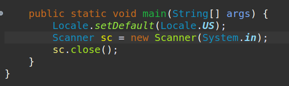

Scanner & Locale

Locale.setDefault(Locale.US);
Usamos essa sentença para padronizar o uso de . como separador decimal.
Scanner sc = new Scanner(System.in);
Nessa sentença declamos a variável 'sc', para que a mesma receba dados do usuário
Não podemos esquecer jamias de fechar o Scanner com o comando no final do bloco
sc.close();